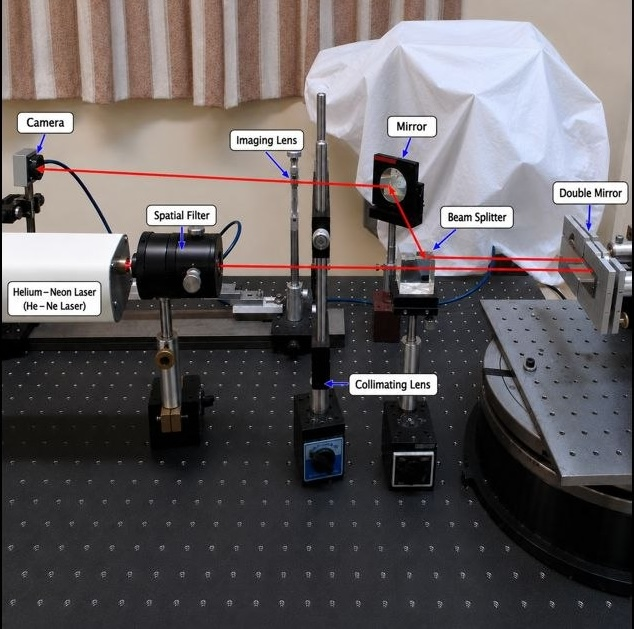

Computational Bioimage Analysis for Quantitative Measurement
- Classical segmentation and measurement pipeline on 670 annotated microscopy images.
- Instance-level evaluation and a controlled study of how noise and blur degrade measurement reliability.
Academic Profile
Ph.D. physicist with research in Fresnel diffraction, CCD-based imaging, and optical metrology, including a peer-reviewed publication in Optics Letters.

A reproducible, deliberately classical workflow for measuring objects in light-microscopy images: preprocessing, marker-controlled watershed segmentation, per-object feature extraction, and a controlled study of how far measurements can be trusted as image quality degrades. Evaluated on the 2018 Data Science Bowl nuclei collection (BBBC038) — 670 images and 29,461 instance-annotated nuclei — with all results reported on a held-out split.
The gap between the pixel score and the object score is the substantive result: pixel overlap is nearly blind to the failure mode classical segmentation actually has, which is getting the object count wrong. Results are therefore reported per modality with explicit split and merge counters rather than as a single flattering average.
Tavan Pardaz Company · Lead-acid battery manufacturing
Lead QC from raw materials to final release; supervise testing, calibration, and data-driven process control.
Institute for Advanced Studies in Basic Sciences (IASBS)
Theoretical and experimental diffraction analysis; contributed to peer-reviewed work in Optics Letters.
Universities & higher-education institutes, Iran
Taught undergraduate optics, mechanics, electromagnetism, and general physics.
University of Zanjan
University of Zanjan
Admitted to graduate studies via the talented-student pathway